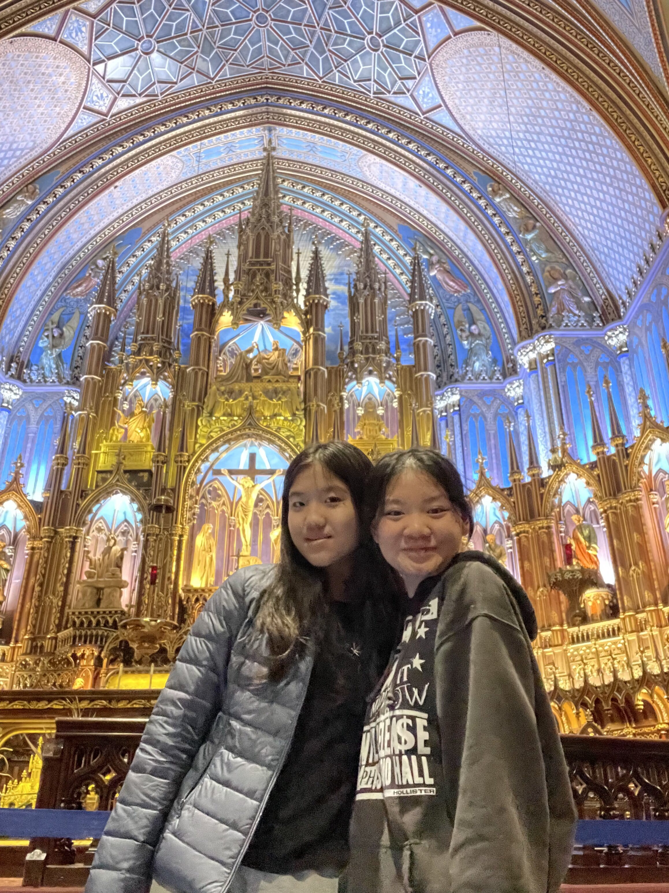
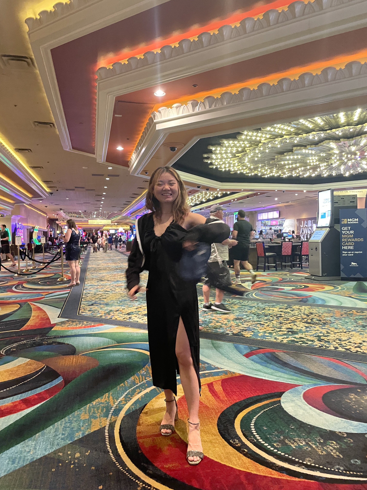

This is a photo taken with my friend Ivy at the Notre-Dame Basilica. I really enjoyed the vibrant cultre montreal has to offer and would love to move there someday. One advice I would give to someone who has never been is to learn a little bit of french and pack some warm clothing because it can get really cold. Overall, I really enjoyed the experience.
New york city was an experience like no other. I liked the unique style of the city and how much it has to offer for influencers and business people.But on the other hand, it was busy and filled with homeless people. I enjoyed visiting MOMA and the broadway shows but I would not recommand others to visit on vacation. Some parts can be quite dangerous and people generally party hard. Also everything is expensice and the train was hard to navigate around.
Last but not least, Los Angelas was interesting, everyone there seems really happy. This is a photo of the casino at MGM grand when we went to see the david copperfield magic show. I would visit again for special occasion, one recommandation is to pack heavy because the stores near any resort can be quite expensive.
